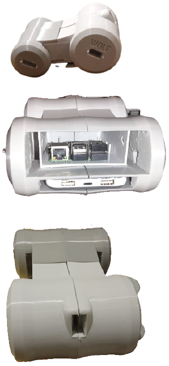
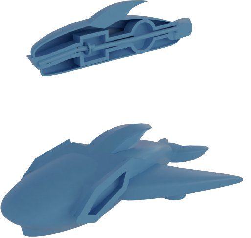

What have I been doing?
Wolf

I am so proud of making this from nothing. All by my self. Project wolf was made from a huge wish that I had when I was younger.
I was watching metalgarurumon on the TV as a child and I was really impressed of the asthetics it had. Obviously I would not give him
the ability to breathe the blue material which freezes anything instantly defying every law of physics. Actually, thinking about it, I think
some laser to cool the object would be sufficient. You know, we can easily weaken the electrons and make them lose energy which will reduce the
temperature of the object. I have no idea but what I do know that this rasbperry pi 3 powered Wolf has been installed in my personal car to replace
the HUD I have. Ps. I couldn't finish it because of the consistent assignments but let's keep that a secret. For later, I want to make wolf
have the ability to interact more with the environment and help me and others gain experience on how to build and program robots.
Poseidon

My Eng207 whale! Meet project Poseidon. This robot has the ability to traverse the oceans and seas, while collecting
oil and plastic debrees. The cool thing about this project is its use of computer vision, ultrasonic sensors and manual control to collect
the waste off the ocean. Poseidon will then process the collected waste with UV light and then give it to some bacteria that would turn
the weathered plastic into energy that will keep Poseidon going making it 100% self sufficient. Well, except for maintenance.
Building a 2D Platformer in Unity

My first attempt to create a game for fun. I have learned C# by coding this game. I referred to some youtube channels
such as Brackeys. Sadly, this guy has stopped producing videos. The game is inspired from
MegamanZero. It is pretty simple, you play as a ninja robot and slice through the robotic enemies to avenge your creator's death. I drew the sprites
and animated the characters by myself. Yeah, the things students do outside the university. I have used Unity game engine to make the game and it was
such a great experience to see the final product come to life.
What does the future hold?
Building the Guardians
Wolf is a first of many other robotic projects that I want to work on.
All of these robotic projects are inspired by animals, mythology or natural events.
For example, project Phoenix is meant to have the power to traverse the skies while being
able to accumulate Solar energy and rebuild itself after taking damage. These guardians will be able to help people
of the future to learn more about robotics and AI. Currently, I am working on creating a semi-realistc environment in Unity.
Thus allowing me to import in any model of the guardian and its specific parameters for joints and other variables. Then, the
guardian (Agent) will learn through Q-Learning preferrably how to control itself and do specific tasks before deploying the expensive
robot into the real world.